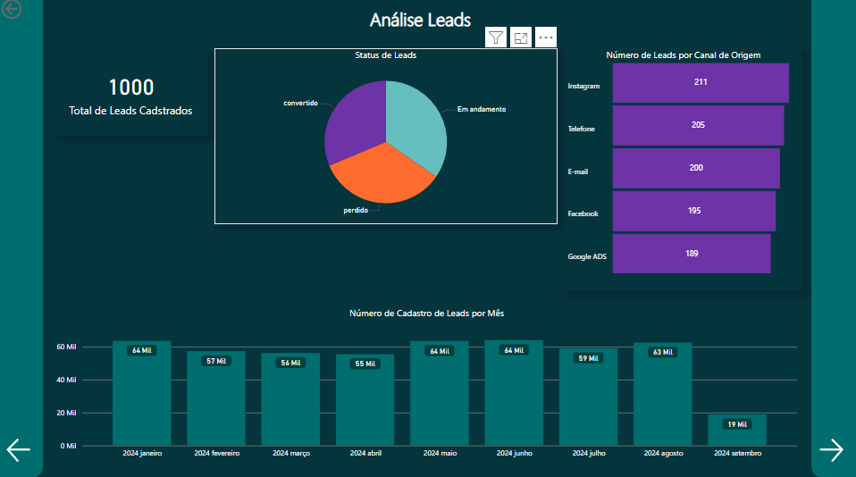
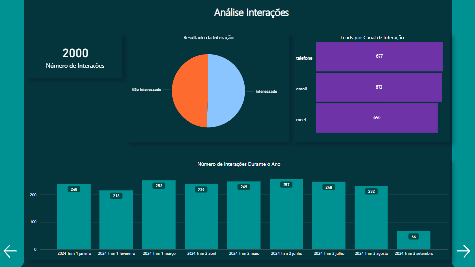
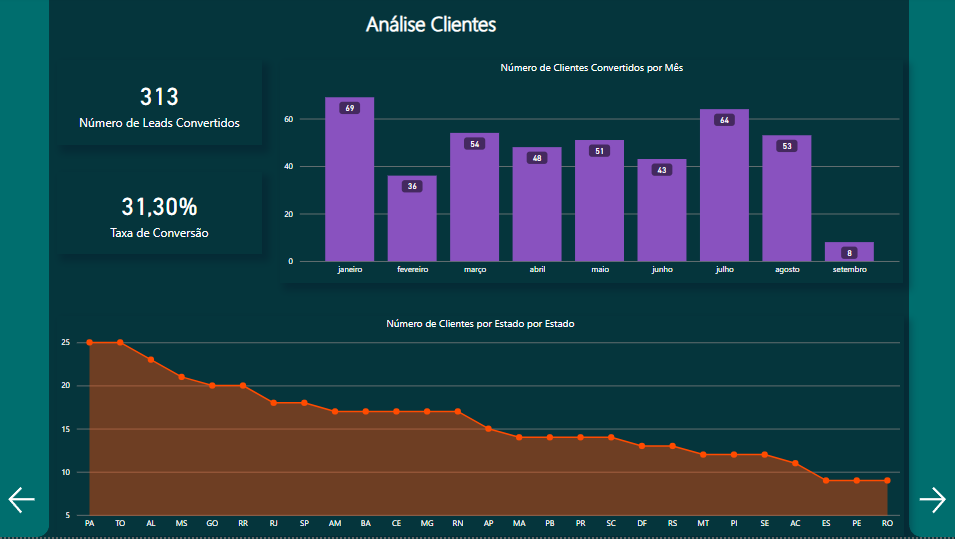
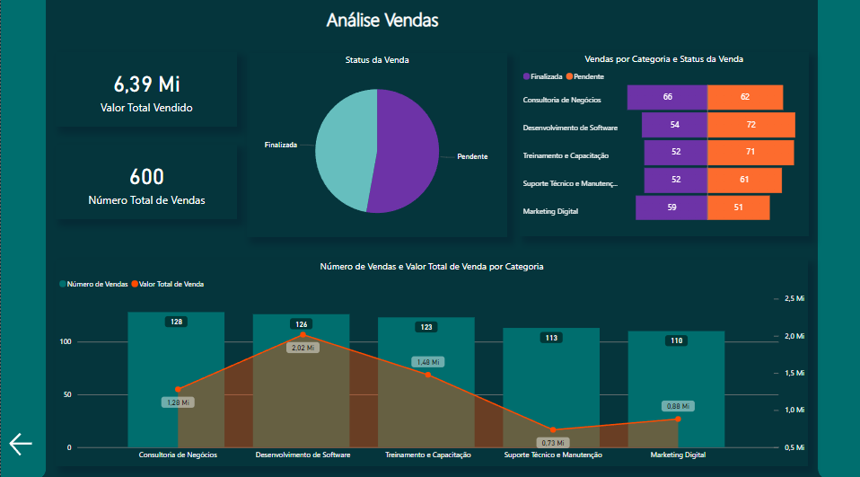

Bem-vindo(a) ao meu projeto de Análise de CRM
Para a criação do banco de dados, optei por utilizar o "PostgreSQL" juntamente com a ferramenta "DBeaver".
Para dar início às modelagens, comecei pela modelagem de dados conceitual em um bloco de notas comum, onde escrevi em forma de tópicos o que seria necessário, pensando nos requisitos de negócios que gostaria de analisar e o que seria interessante visualizar.
Após fazer o modelo conceitual, utilizei o DrawSQL, uma plataforma online, para montar meu modelo lógico, montando a tabela fato e as dimensões, adicionando as métricas fundamentais em cada uma, fazendo todo relacionamento necessário entre as tabelas. Ao finalizar o modelo lógico, a plataforma "DrawSQL" permite fazer a exportação do arquivo para MySQL, PostgreSQL, etc. Baixei o arquivo do modelo lógico e o executei no Visual Studio Code, já integrado com meu banco de dados.
Para acessar a ferramenta DrawSQL, clique aqui.
Para automatizar a inserção de valores nas tabelas, utilizei um script Python que inseriu dados fictícios no banco de dados. Esse script continha as informações de conexão ao banco e os comandos necessários para popular as tabelas.
Veja o exemplo do script Python:
import psycopg2
def inserir_dados():
conexao = psycopg2.connect(
dbname="vendas_db", user="usuario", password="senha", host="localhost"
)
cursor = conexao.cursor()
cursor.execute("INSERT INTO FT_VENDAS (DATA_VENDA, ID_PRODUTO, ID_CLIENTE, QUANTIDADE, VALOR_TOTAL) VALUES (%s, %s, %s, %s, %s)", (data_venda, id_produto, id_cliente, quantidade, valor_total))
conexao.commit()
cursor.close()
conexao.close()
inserir_dados()
Minha tabela FT_VENDAS necessitava de uma coluna que mostrasse o valor total de vendas. No DBeaver, criei um script SQL que adicionou essa coluna e atualizou os valores, realizando um JOIN entre as tabelas de produtos e vendas.
Veja o exemplo do script SQL:
ALTER TABLE FT_VENDAS ADD COLUMN VALOR_TOTAL DECIMAL;
UPDATE FT_VENDAS
SET VALOR_TOTAL = QUANTIDADE * (SELECT PRECO_UNITARIO FROM PRODUTOS WHERE ID_PRODUTO = FT_VENDAS.ID_PRODUTO);
Para realizar as análises e montar os relatórios, utilizei o Microsoft Power BI. Integrei meu banco de dados PostgreSQL ao Power BI para que qualquer modificação fosse atualizada automaticamente nos relatórios.
Página Inicial
Leads
Interações
Clientes
Vendas
